In an ever-crowded inbox, what makes an email truly stand out? As digital noise increases, the need for emails that genuinely resonate with recipients has never been more important.
In this insightful fireside chat, email experts Matt Helbig and Jeanette Woodburn delve into the strategies and design principles that create impactful, memorable emails. From crafting human-centered designs that focus on readability and accessibility to leveraging AI to support, not replace personal connections, this session equips marketers with practical tools to elevate their email campaigns and leave a lasting impression.
TL;DR:
- Human-Centered Design: Prioritize a clean structure, enhanced readability, and accessibility to create emails that offer a seamless user experience.
- Meaningful Personalization: Move beyond generic content by segmenting your audience. Tailor messages to increase relevance and foster stronger customer connections.
- Leveraging AI Effectively: Use AI to refine the design and copy but maintain a distinct brand voice. AI enhances emails but shouldn't replace the unique, personal tone.
- Avoiding Common Pitfalls: Avoid misleading subject lines, overused stock images, and excessive navigation links, which can distract from the core message.
- Best Practices for Engaging Design: To improve engagement and clarity, embrace dynamic content, consistent branding, and concise, scannable formats.
- Customer Loyalty Strategies: Engage users with humor, exclusive offers, and value-added promotions to build long-term loyalty and enhance brand affinity.
- Continuous Testing & Optimization: Use A/B testing, gather feedback, and adjust based on customer insights to maximize campaign effectiveness and engagement.
Jeanette Woodburn: Regarding my design capabilities, I am proficient with stick figures. I'm curious about others in that particular boat: What are some things they could try or do to level up their emails and be impressive in that?
Matt Helbig: People always ask us, what makes a good email? How do you pick what goes on the site? Here are some points to think about regarding your campaigns and testing opportunities.
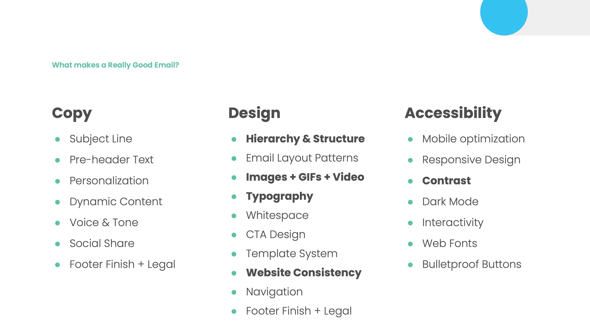
The first one is just the overall structure of the email. Creating a good structure for an email allows people to know what's important and what they should do next. Thinking about that layout helps people better understand and use your email.
Many people used to need help with blurry, low-quality photos regarding images, GIFs, and videos. We talked about AI today, and one of the cool things with AI is that you can have a poor-quality image, like UGC from a customer or something, run it through AI, and now it's a high-quality image. You can edit it more and include it in an email.
Seeing a blurry image or poor-quality GIF in an email distracts the user and pulls them out of the message. Many brands still need to include imagery that matches their headline or the content of the rest of the page.
In the email, they're just throwing in stock photography to fill something in the top. But when an image supports the rest of the email and helps clarify the overall message, whether from an image or iconography, it can help people understand your email and not just include something because you have to.
Typography is another big thing—making it easy to read and making sure it stands out. Many brands can use cool, bold typography in the first parts of the email to capture people's attention. Still, the rest of the email should be easy to read.
Website consistency. We don't see this as much anymore, but brands struggled to make their emails look different from their websites. It can be jarring to users when they're interacting with an email; they click something, and the website button seems different. It doesn't feel like that's a consistent experience.
Lastly, contrast is a big one that we always talk about. This goes into email accessibility. It will be hard to read if you have a white font on a light blue or yellow background. So, think about that audience and ensure the contrast ratio is there.
We have many accessibility features in web design. It's important to make many more of those available in email, and that's what we're pushing for.
So here's another little checklist for emails.
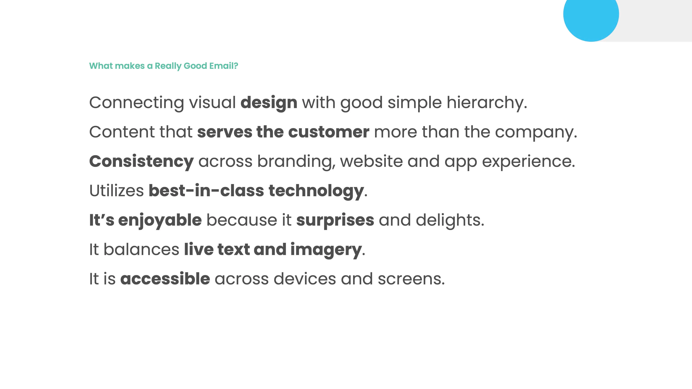
The email should serve the customer more than the company. So, say you have a product release email. Instead of telling someone, "OK, here's the product points," really make it about them. How does it make my life better? How does this new feature set help me? Does it help me do my job faster?
That focuses the email more on them and the problem they're trying to solve, not just about telling them you did something. If someone forwards your email to someone because it looks cool or has a cool message, that's an excellent brand opportunity. We should aspire to do that with our emails, not just talk about ourselves and promotions. We should aim to create surprise and delight in the inbox, making recipients feel truly special.
Accessibility goes beyond ALT text. It's thinking about mobile, desktop, image size, and weight. Things like that help your email be where someone wants to see it and let them interact with it a lot easier. It just shows that you have a responsibility towards that audience.
At RGE, we have a little game called Design Golf.
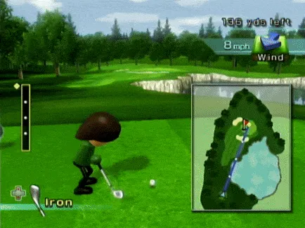
Whenever something changes in your email design, that is a point. For example, if you have a brand font or a color change, each section represents a context switch. Too many context switches can leave the recipient alienated and confused about using your email. We aim to keep the score low and make things easier for them.
Jeanette Woodburn: Yeah. Isn't seven seconds the average time people spend looking at an email?
Matt Helbig: Yep. Scannability is a big thing with an email. A good designer will include everything in an email. A great one tells you what to take away from it.
Jeanette Woodburn: So it's about exercising that editorial control, too.
Matt Helbig: Exactly. Design and the content side.
Jeanette Woodburn: Those are some easy wins. But there are a lot of things at the foundational level. Can you talk about some of those? What's the most important thing to focus on?
Matt Helbig: So, here are things that you want to get right.
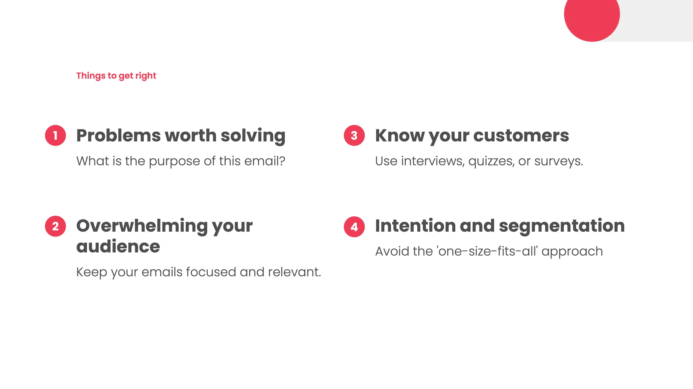
What problem is the email solving? What is the purpose of the email? You are trying to have some intention behind that email and not just because you have something to say. Let's try to solve a problem that our customer is having. Let's create relevant content, giving them only a few options and clarifying the next step.
With email, you're always guaranteed one click in an email. It would help to decide what that primary CTA is and what action you want them to take. If you're giving them ten different things to click on, you're distracting that message, and it needs to be more explicit about what they should do next. The big thing here is just knowing your customers.
You can conduct surveys, interviews, and questionnaires about how your customers use your emails. One of the coolest things is sending someone a $50 Amazon gift card and saying, "Let me show you this email design. What would you do next? How would you use this email? Is this relevant to you?" One thing we did with RGE was survey our customers: "What day would you like to receive this newsletter?" You might discover many new insights by talking to different stakeholders or customers.
Lastly, segmentation is an invisible email design that avoids this one-size-fits-all approach. People talk about email as having many limitations. One of the best ways it stands out from other channels is to segment and create a one-to-one message. The single message that applies to everyone is leaving money on the table regarding opportunities.
I just recently interviewed with Going. You might know Going as Scott's Cheap Flights, but they just transitioned to this new brand.
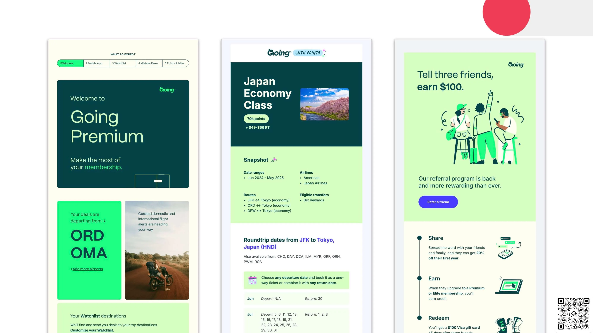
These emails are so smart to me. They are customer-focused. They're an extension of their product. Like this first one, the Welcome series brings dynamic content about where my home airport is. It's showing me at the top how many more touches are in this onboarding series. Things like that show an understanding of your audience and what goes into an email, including the most important information and great design.
Jeanette Woodburn: Okay. So you were talking about personalization, and one of the things that I appreciate about your work and how you think about things is this whole humanizing design. Still, we've been talking a lot about AI today, too. So, regarding AI and artificial intelligence, what role can AI play in humanizing design?
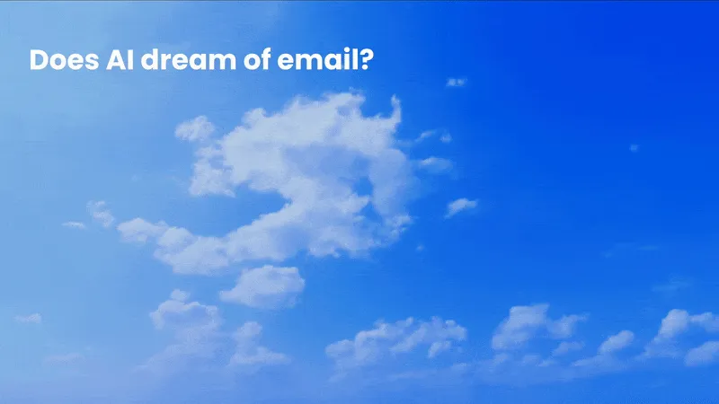
Matt Helbig: AI can do many things, but email is all about building a connection with your customers. You want to communicate with them like you would with a friend. Think of AI as your helpful sidekick—it's great for crafting your email campaigns, but it can't replace your brand's unique voice or that personal touch. Beyond just generating content, AI can help with the overall look of your emails.
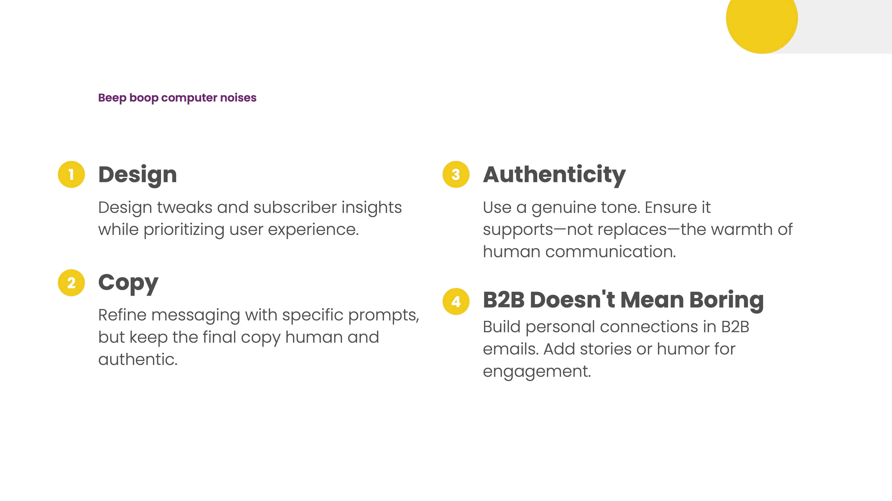
What does AI think about your email design? Does it think it sucks? Putting in those prompts asking about a welcome series and how can I make this better out of these five emails? Which one doesn't provide enough value? It can have some interesting opinions about overall design outside of that.
AI is a great way to refine your copy. Consider prompts about what points in this email distract the user from this message. How can I make this more human? Things like that, keeping that genuine tone throughout your email, should help, not replace, you.
Regarding B2B communication, it's common for folks to wonder how they can shake things up in the inbox. Adding humor and making your messages more engaging is a great way to do that. Be bold and show people's faces or discuss real business challenges. Many creative ways exist to keep things relatable and avoid sounding like robots.
Jeanette Woodburn: That's awesome.
Matt Helbig: So here's a quick warning.
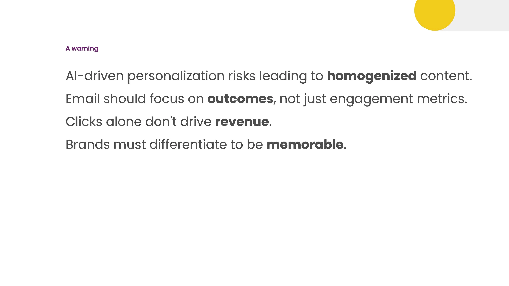
We want everything to look different. Suppose everyone's doing the same type of prompts and getting the same responses. In that case, that can be the scary future where everything looks the same, making your brand not stand out from other brands.
It would be best to focus on those outcomes, not the vanity metrics we all look at. Is AI making me more sales than the human variant I'm testing?
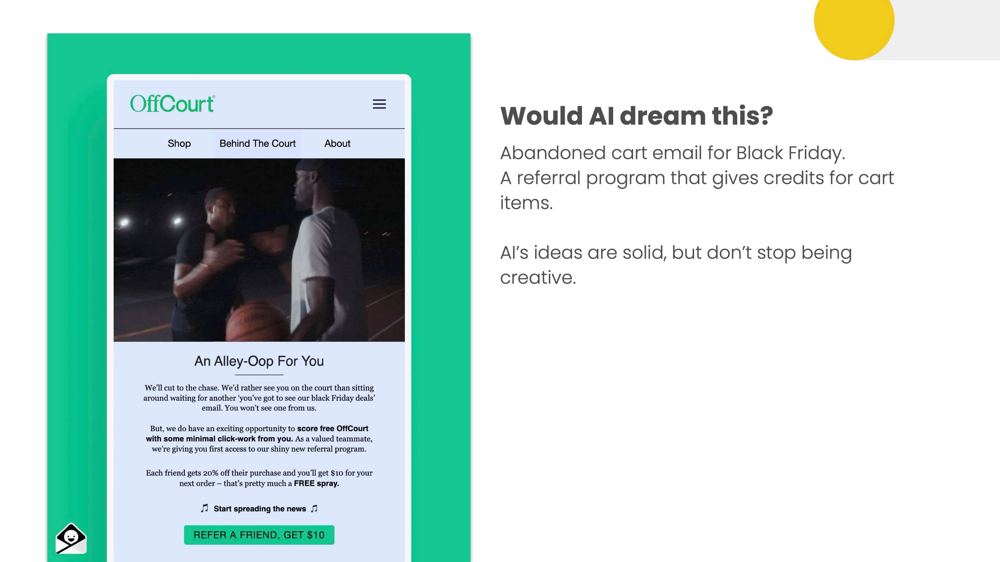
This is Offcourt providing a personalized win-back or abandoned cart email around Black Friday that includes some referral stuff. It's distinct to this company that AI may not help with. There are solid ideas regarding AI and how the flows can be set up. However, there are still opportunities to create something personalized and relevant to your customers.
Jeanette Woodburn: To continue this AI theme, this is especially important or pertinent in Los Angeles because there's a lot of conversation about AI's role in creative work, and of course, email is a creative channel. So, where and how does it make sense to incorporate AI into email design, and do you see a future or even a present where AI is making emails?
Matt Helbig: There are many opportunities, more than just the content marketing piece.
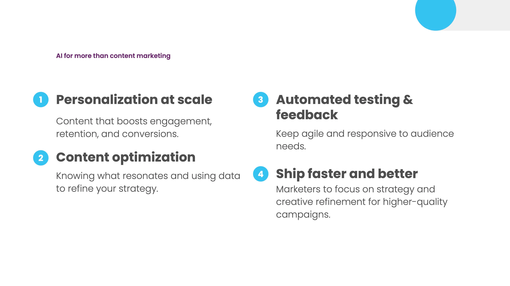
I am thinking of better ways to do that personalization with AI. Content optimization, more automated testing, and getting to market faster allow you to do other things instead.
I see a lot of brands saying, "Oh, we don't want AI; it's going to impact our jobs." Hopefully, AI can help you speed up some of the stuff that you don't like to do so you can spend more time on the creative aspects of your job that you want to do. Attribution and ROI are other things. I think it's cool that a design assistant or buddy can always cover your blind spots regarding email design.
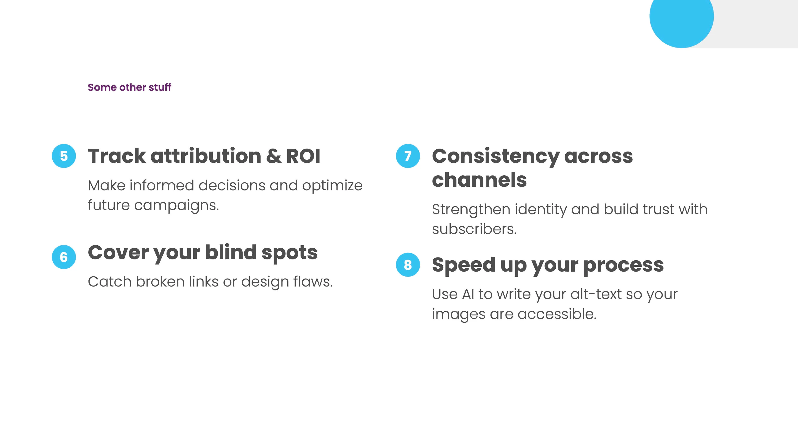
Maybe you're in your silo making this stuff. You don't realize, or there's not a person you can bump up that email design to, and now having someone before you go to your boss say, Look at this email image. What do you think about this email? What are some parts that I could improve?
It's just another set of eyes that can be beneficial. Then, there are some other personalization ideas that I wanted to highlight.
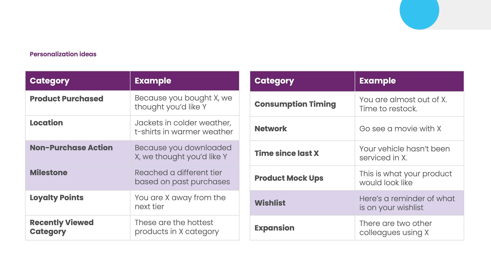
So here are the top three trends we saw in our search data for 2024. The milestone is the biggest one here. I'm talking about people adding some gamification, like in the previous examples.
How can you make someone feel like they're being seen based on past purchases or interactions? Reaching these sorts of milestones is another type of communication that may be helpful for them. The wishlist email is excellent for communicating that if you have that built into your site.
So, we asked ChatGPT to roast our email.
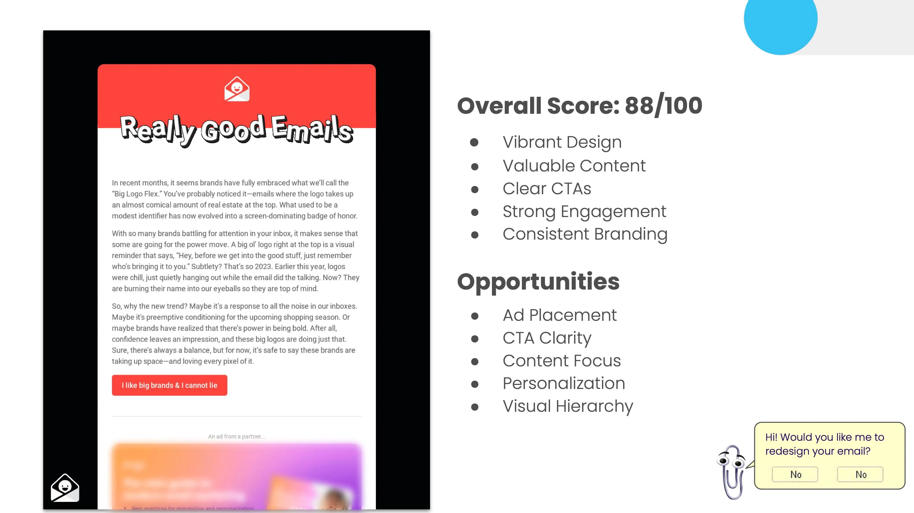
We got an 88 out of 100, and it's pretty good. Here are some points that stood out, and they also helped us with some opportunities to make our email better. This email is longer; it has a lot of different sections. In our redesign, we may include some of these as opportunities to change.
Jeanette Woodburn: If some of us wanted to do that ourselves, would we put the HTML in?
Matt Helbig: I uploaded a full screenshot and HTML that said, "Let me know about this email." The prompt was simple: "Score this email out of 100 and tell me why."
Jeanette Woodburn: It told you how to get those extra 12 points.
Matt Helbig: It's one of those things. Should you listen to everything it says?
Here's a terrific little form I use for our interview series, Feedback Friday. It lets me get some information about this email to discuss it throughout the interview.
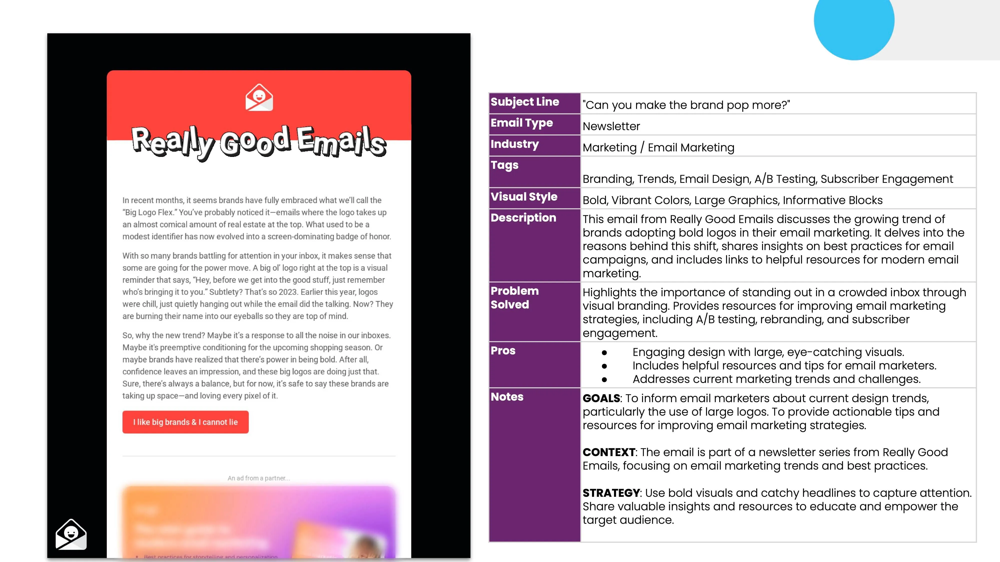
It's just an empty form, and I pasted it in ChatGPT and prompted, "Complete this form," and it spits out this. It let me know details about this email. Having some of this information is cool. It can save you time when you're filling out those kickoff documents.
Jeanette Woodburn: Can you check if any emails sent by an AI have been submitted to RGE?
Matt Helbig: AI is invisible now, but seeing how AI may generally change email design is interesting. Here are some ideas to help you think about AI helping you design your email better.
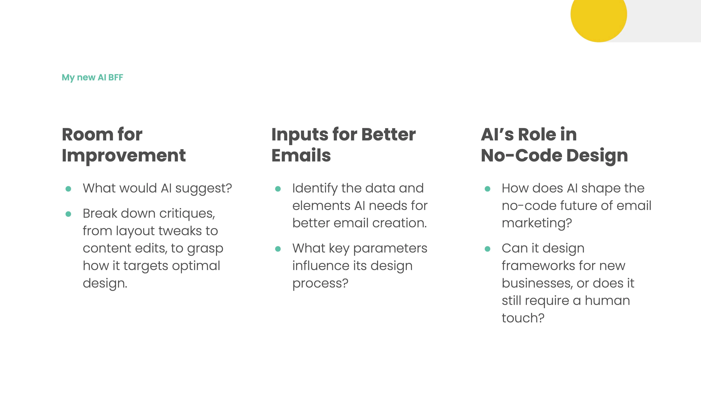
What would AI suggest? What data would I need to make this email even better regarding personalization? And on the Befree email side, could you give AI your URL to your website, and it builds you in a whole onboarding flow based on that?
There's some cool stuff that AI could do. We saw some today and were just at the beginning of AI's role in email.
Jeanette Woodburn: Yeah, it's also fun playing with those tools.
Matt Helbig: I want to share this cool art project called Spells.
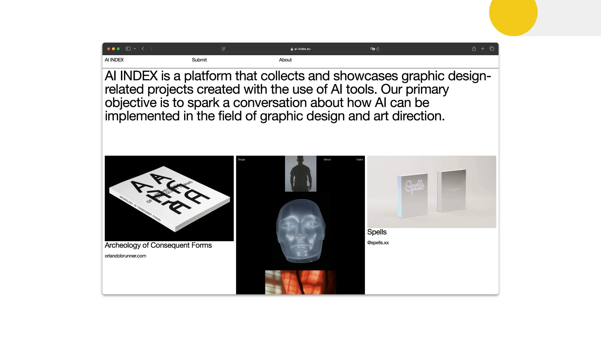
It shows the prompt and the output for generative AI. I like the art aspect of it. But I hope something like that exists for marketers who share prompts and learn how to improve things.
Jeanette Woodburn: What things do you dislike seeing in email?
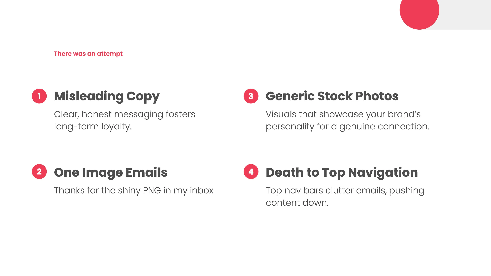
Matt Helbig: One thing I hate about everyone's emails is a misleading copy. It does not make sense to mislead your users for a quick win or a little bump in engagement. Still, again, it's like lying to your significant other in a relationship. It doesn't usually work out that great long term.
One-image emails—I dislike that in 2024. Using some live text with dynamic content will be much easier to change in the future. People are not going to be able to read it. And then people talk about how we're just going to design something in Figma and export it, slice it, and dice it into an email, which will work great. But even with something like translations, if your email isn't in live text, you can't translate that to another language; it might impact accessibility that way.
Generic stock photos (unless they are ironic) are standard, but they often do not relate to the accompanying text. Adding extra images that don’t support the message of your primary copy can dilute your message. Using generative AI or dedicating time and effort to improve your photography can enhance your emails significantly.
I don't like top navigation bars anymore.
Jeanette Woodburn: I'm with you on that one. I was into them for a while and can't handle them now.
Matt Helbig: I've seen many brands put it on the bottom, and it is like a shoppable link. When people scroll down to an email, it's easy to click those rather than trying to go to the top. I'd place it at the bottom of the email so as not to distract from the main message at the top.
Jeanette Woodburn: I like knowing it's there so I can get to it if I need certain things.
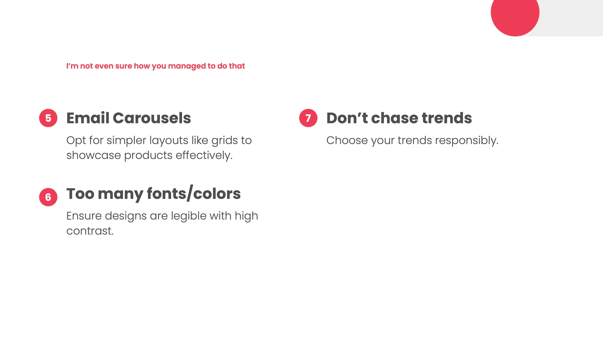
Matt Helbig: Email carousels. Let's keep them at the carnival. It's hard to track the ROI. I like a straightforward layout when it comes to email. Expecting someone to click through your little carousel and click on everything will take a lot of work.
Too many fonts and colors. When you're including everything, it gets tough to stay focused.
We discuss best practices and trends in email, but you should choose ones relevant to your brand. It only makes sense to chase the next hot thing occasionally. Think about your brand and how it can apply. But don't put everything in there just because you read some blog posts about it.
Jeanette Woodburn: What are some other areas that people should think about when they're building emails?
Matt Helbig: Some high-level points are copywriting, personalization, segmentation, and content optimization.
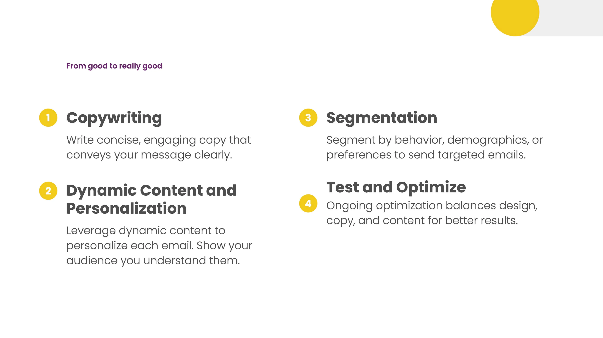
There's an opportunity for dynamic content and personalization beyond just first name. Email should be one-to-one nowadays, and many opportunities exist to make that happen.
Sending one message to everyone doesn't make sense anymore. Even in an onboarding flow, if you know more about your customer, that might look different rather than just serving everyone the same type of email.
You can probably go to your team and say, "Let's focus on some of these and improve our emails."
Jeanette Woodburn: Tell me other ways people can develop their email sensibility and continue not to put things in your inbox that give you hives.
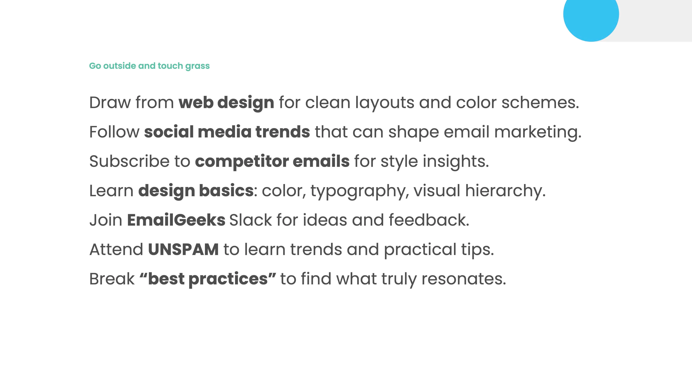
Matt Helbig: Looking at web design in general, we're seeing many cool trends come to email, especially in the DTC world. Many brands do a fantastic job. Many agencies are making cool-looking emails that don't fit the average overall trend within email. Social media trends that perform well on social media can also apply to email. Signing up for your competitor emails is a great way to do this.
Coming to events like these is awesome. Learning some overall design basics can help you communicate to your design team or developer what you want to change or what you don't like about an email. Speaking that same language can help a lot with the overall messaging.
Jeanette Woodburn: I remember hearing a fair number of retail folks in the audience or just some people who might be concerned about the holidays.
Matt Helbig: Have you heard of Black Friday?
Jeanette Woodburn: Is that coming up again? I've heard it's coming up.
Matt Helbig: They're doing it again this year.
Jeanette Woodburn: And doesn't it get longer every year? What are some things that might be helpful for folks who are going through that?
Matt Helbig: It's a hectic time right now. I hope everyone is close to finalizing their Black Friday plans.
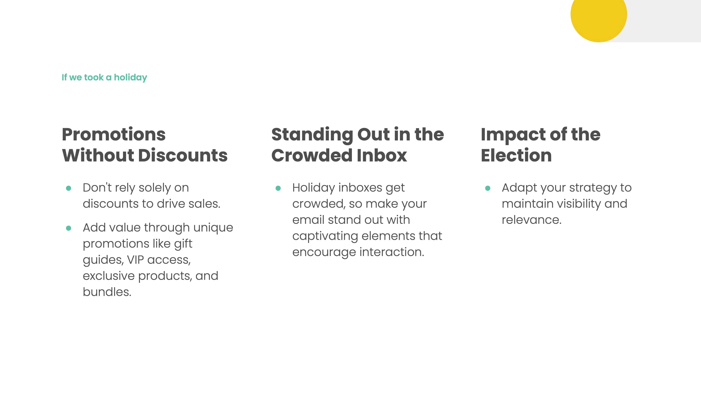
One aspect we've been considering this season is how to run promotions without resorting to discounts. The question is, how can we add value to our emails without simply lowering the price of our products?
I heard an analogy sticking with me: Black Friday is like going to a bowling alley with your coworkers. You're allowed to be a little weird and crazy, but you don't want to always be like that. You can do some fun stuff for Black Friday that's outside of your brand when it comes to design and the offers that you do.
How do you stand out more in that inbox and make the value more memorable? There are many ways to make your customers feel appreciated, primarily through VIP access and bundling options. They will look forward to your promotions, whether a special deal during Black Friday or another event, rather than settling for the typical 20% discount many businesses offer.
Jeanette Woodburn: Sometimes, it's about repackaging it correctly, too, and making it clear: No, this is for you.
Matt Helbig: I've heard about the election's impact going into the holiday season. So, we have yet to see a ton of information about that. When competing with many messages, try to keep your plans fluid regarding some of that stuff and the inbox expectations.
Jeanette Woodburn: Fluidity is the name of the game. Having some backup plans and things you can move around if necessary.
Matt Helbig: Here are some other value-added ideas that would be cool to include.
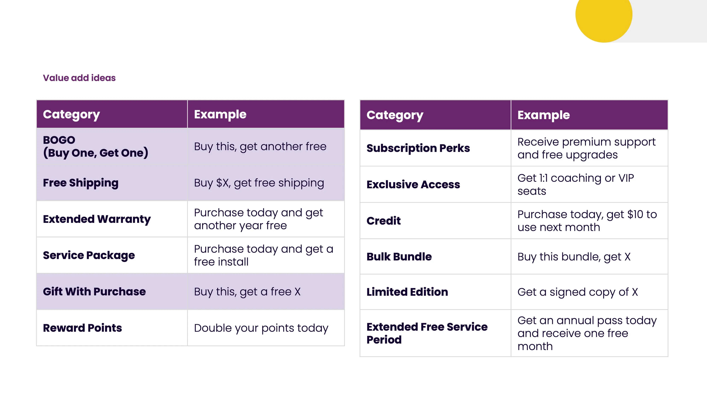
Looking at our search data, we see that the top three highlighted ones are the most popular. Buy one, get one is a big part of how people position products.
You can also do some cool stuff with abandoned cart emails, such as reminding people about free shipping. Gifts with purchases are becoming more popular during the holiday season, which may get people to check out.
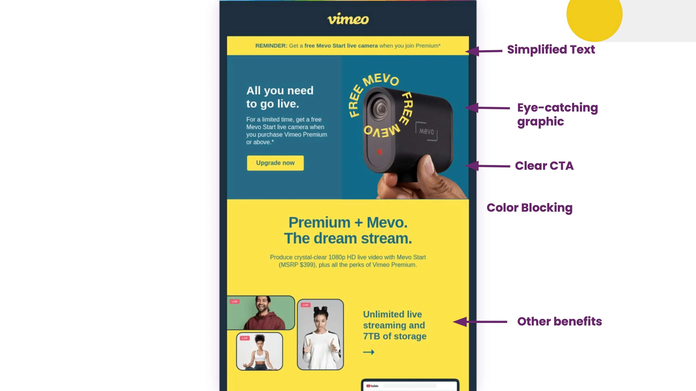
Here's a cool one from Vimeo that offers a gift with purchase, so it's a way to get people to make a purchase.
Jeanette Woodburn: I also like the blue on the yellow that pops nicely.
Matt Helbig: I like that, too.
Jeanette Woodburn: Christina's giving me the face. So, if anybody wants to ask a question, we have a microphone ready.
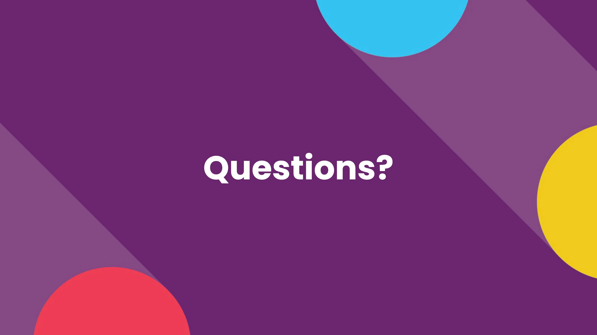
Audience Member: Could you discuss some best practices for subject lines? I liked your point about standing out in the inbox. Are there any effective strategies or current trends for crafting subject lines that score well with AI? Since the subject line is the first thing a recipient sees.
Matt Helbig: Short and concise is becoming a trend that we're seeing much more. People appreciate getting directly to the message now. It's just not trying to mislead someone with a subject line. Having that copy and delivering what the promise is. So, teasing some of that content and giving it via email is the best way. And now, with the latest iOS, they're summarizing emails, so some of that preheader text may not be as relevant anymore. So, think about how some of that stuff impacts your end send.
But again, if you're building a relationship with these customers, hopefully, they're looking forward to your next email and want to open it.
Jeanette Woodburn: To Matt's point about keeping it short and sweet, ensure you're sending the email and looking at it on the phone. My phone cuts off a good part of a subject line. You want to see if the message is getting across the finish line.
Matt Helbig: Also A/B test. You can still try to do that. Even if some of the privacy stuff impacts open rates, I think there are still ways to look at clicks and other metrics, which may drive how you pick a campaign winner.
Jeanette Woodburn: Depending on how in-depth you want to go, when I was working in B2C, we had competitors, and I just had a general sense of what was happening in my inboxes. We signed up for everything we could. So, literally, in the morning, we'd have sent time optimization and a few things going on. Still, we'd get a picture of what was trending that day and switch it up based on what was happening.
Audience Member: Hey, I have a question about misleading copy.
I'm not sure who started this, but I've seen more subject lines beginning with "RE:" I hate that because it seems like an email thread you've replied to. I'm curious about what recommendations you would give people because I can see why folks would want to use that.
It does increase email opens and engagement, but I would love to be able to advise people to do something else.
Jeanette Woodburn: The easy response is, "Sure, it increases your opens, but what do the other stats do?" If you open an email thinking it's one thing, it's not what you thought it was, and you're not buying the product.
That's something to look at all of the metrics, see what your click is, see what your conversion rate is, and follow along to make sure that it's actually doing what you want it to do and not just bumping up the open rates to make you look good.
Matt Helbig: Yeah, this is my weird email conspiracy of faking a mistake and sending a fake email to fix the error. People open and click on it, but it's about building that long-term relationship. If you only care about the click, I'm down for you to try whatever you want to do.
Still, for most brands, it's more about building that relationship over time and considering repeat customers and customer loyalty. If you only care about that one click and that one sale, go for it and do whatever it takes, but that's different from what we see working long-term for brands.
Audience Member: You said seven seconds or less where people scroll through an email and the need to incorporate a genuine tone, whether that's humor on brand or something. Which part of the email should this genuine tone be focused on?
Jeanette Woodburn: It does start with the subject line. There's also the aspect that you typically send more than just one email to somebody; you often send multiple emails. So, it is a chance to build that relationship and get them used to the tone, like Squatty Potty.
You know what to expect now. And so there's that aspect of learning: even when you see that sender ID in the inbox, you understand what to expect. But it starts with the subject line and goes with consistency throughout the email. And even with humor, it's also knowing your audience.
One group might think Squatty Potty's humor is funny, and another may be offended by it. It is just being yourself, being consistent, and just owning that.
Audience Member: I have a question regarding using longer GIFs and videos within emails. Do you have any advice on using those longer videos without making the email extremely heavy and affecting deliverability?
Matt Helbig: I say you don't do that. Do you expect a customer to watch a 10-second-long GIF? Do they love that GIF so much that they will spend that time of their day? Many brands do fantastic stuff with just three frames as a GIF. Keeping that GIF under one megabyte also helps with load time.
If you have a good message, people will bounce out to a YouTube video or a hosted one somewhere. There are ways to preview it, such as a 10-second preview with a play button that bounces them off to something else, but more than 5 seconds is too long for a GIF.
They will only watch part of it, detracting from the overall message.
Jeanette Woodburn: Yeah, it's funny. I am thinking of an email I just got the other day from Crumble Cookies, which is currently one of my most opened emails. And I thought it was clever. Instead of showing them frosting the whole cookie and experience, it was just a few quick snapshots of the progress.
Audience Member: A quick question about dark mode. Is there anything that you should always think about when you're designing for dark mode?
Matt Helbig: One quick win is using transparent PNGs for logos. That makes it easy when that switch happens.
Test your emails on different devices and see how they react to dark mode. Beefree has a dark mode preview, so if you're designing your email, you can set specific styles for dark mode.
People sometimes force a non-dark mode experience. I like it when brands take the time to think about that within their design system and prefer dark mode. However, these users opt into that preference, saying, "Oh, it doesn't match our brand guidelines. We want it to look this specific way." It doesn't work for me.
Jeanette Woodburn: Yeah. Be thoughtful about which systems and platforms your audience is on. Don't focus on trying to hack dark mode for something you don't need to worry about or for one person.
Audience Member: I feel guilty when talking about simply going from Figma and slicing up images only. Is it better to simplify the overall look and feel? We have an email with a gradient background, but that doesn't transfer over as we want. So we want it to be visually engaging, but then we're also losing those accessibility moments.
Matt Helbig: It's finding the balance. It's hard to live in extremes regarding email marketing of something that's all image or all text-based. You want to include brand fonts and colors that may translate poorly to a well-coded email. Find more opportunities. Use a big image with all your brand fonts, but that button might be live text. I think you can still be creative while considering some accessibility as well. So that's my opinion.
Audience Member: Are there any industry best practices or overall philosophies around resending emails to non-openers, and what would be the efficacy and actual impact of that?
Jeanette Woodburn: I know that's gotten a lot harder since Apple did their little thing that we all appreciate. It depends on what you're trying to send and what you're trying to get across. I always love saying that not even your mom reads all of your emails, so you can get away with recycling something.
But I think in the larger picture, if those folks aren't engaging in general, that's the question you need to look at and see: Do we need to slow down the pace of what we're sending them, do we need to send them something entirely different, that kind of thing? I'm all about a recycling program if it eases your day.
Matt Helbig: We find that sending a last-chance email to non-engagers before a webinar performs very well. We typically see a significant increase in signups with this approach. Consider the type of campaign you want to send. When you resend the email, you can modify the subject line and some of the content.
Jeanette Woodburn: I'm getting these low-key signals that it's time to make space for the next session. Matt and I will be around if you have more questions.